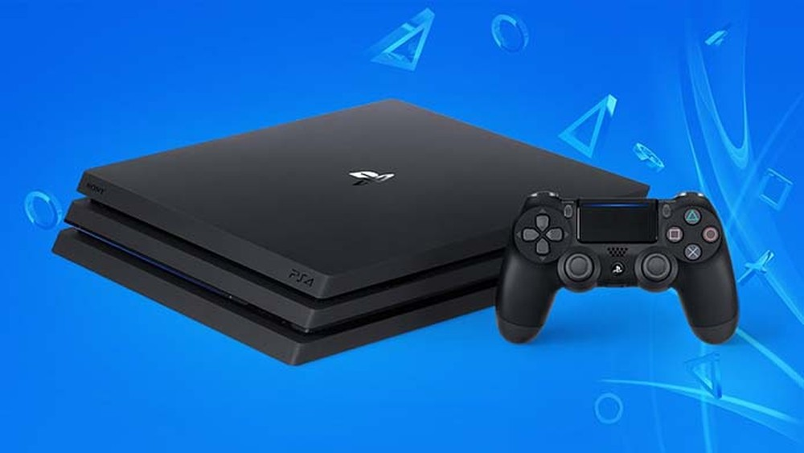
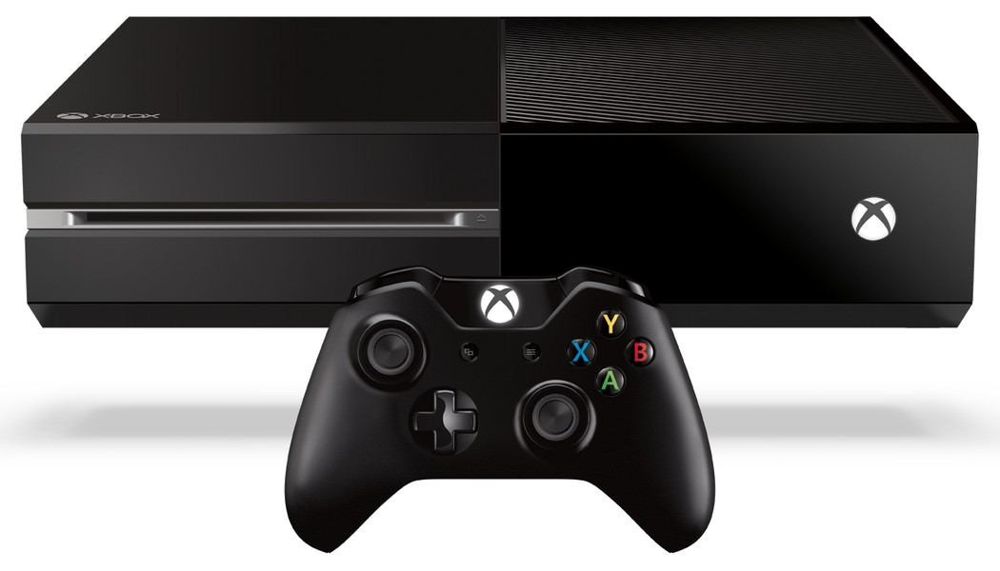
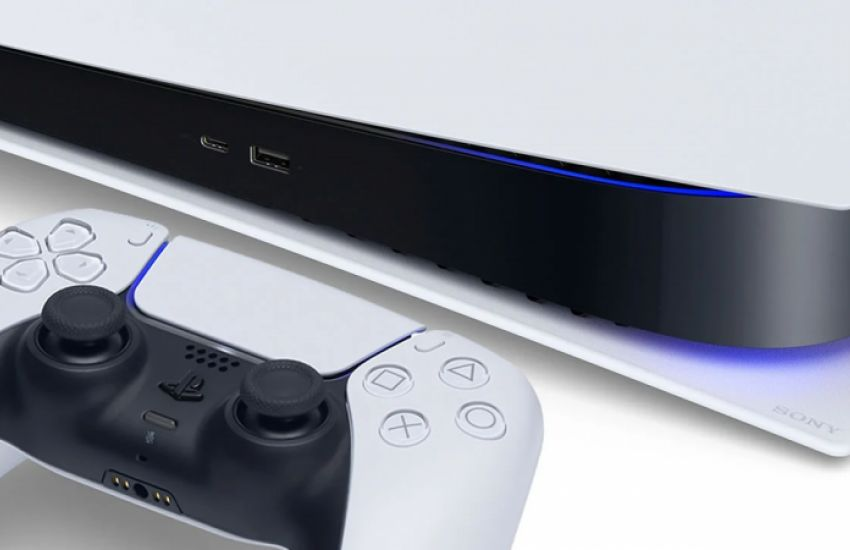

Consoles mais atuais
PlayStation 4 (PS4)
O PlayStation 4, ou PS4 (como é mais conhecido) é um video game da Sony lançado em 2013. O console tem três versões principais: fat, slim e Pro. A primeira (e original) tem esse nome por causa do peso e conta com 500 GB de armazenamento. Já a edição Slim, mais leve que a anterior, pode ser encontrada com armazenamento de 500 GB ou de 1T. O console mais novo, PS4 Pro, foi lançado em 2016. Ele reproduz imagens em 4K e tem armazenamento de 1T. O preço do PS4 Pro varia entre R$ 2.000 e R$ 2.500. Enquanto o do PS4 Slim fica entre R$ 1.500 e R$ 2.000. As edições Slim e Pro têm 8GB de memória RAM GDDR5, leitor Blu-ray e sensor de movimento embutido no controle, o DualShock 4. O joystick também tem touchscreen e botão para compartilhamento. A maioria dos jogos atuais rodam no PS4, tendo versões melhoradas no PS4 Pro. Na lista de games compatíveis com o console da Sony estão FIFA, Far Cry 5, Minecraft, Injustice 2 e Call of Duty: Ghost, além dos exclusivo God of War (GoW), The Last of Us, Uncharted e muito mais.
Xbox One
Xbox One é o console de última geração da Microsoft, lançado no dia 22 de novembro de 2013. O videogame tem duas versões alternativas: Xbox One S, o mesmo console, porém com tamanho slim, e Xbox One X, uma versão mais poderosa capaz de rodar jogos em resolução 4K. Primeiramente lançado com 500 Gb de armazenamento, o Xbox One já possui edições com o tão esperado 1 Tb, inclusive algumas especiais com Halo, Forza e etc. As cores básicas do aparelho são branco e preto, e o preço sugerido é de R$ 1200. O sucessor do Xbox 360 segue os passos do antigo em relação aos grandes jogos exclusivos. Principalmente em relação com suas grandes franquias: Halo e Gears of War. Halo 5: Guardians e Gears of War 4 são acompanhados por outros games que não serão vistos no PlayStation 4, como Rise of the Tomb Raider, Forza Motorsport 6 e Titanfall.
A principal novidade do One é a retrocompatibilidade com o 360, que foi anunciada na E3 2015. Com isso os jogos do Xbox antigo rodarão no mais moderno, tanto mídias digitais, quanto físicas. XOne também renovou a interface de conquistas e permite a gravação de vídeos de gameplay, que podem ser editados ou upados direto para o YouTube. O console possui exclusividade com o EA Access, que permite testar os lançamentos da Electronic Arts um pouco antes de seus lançamentos. A assinatura também disponibiliza jogos grátis de tempos em tempos. A biblioteca de gratuitos já possui mais de 10 títulos e conta com Fifa 17, Titanfall 2, Need For Speed Payback, Battlefield 1, Star Wars Battlefront e mais. O Xbox One é uma central multimídia além de um videogame. Nele podem ser acessados diversos aplicativos como Netflix, YouTube e redes sociais que permitem o usuário ter Internet, TV e games em uma única plataforma, além de ser compatível com o Windows 10 e a Xbox Live. Com Kinect 2.0, permite reconhecimento facial, gestual e de voz. O aparelho eleva a experiência em alguns games e pode ser usado para dar comandos ao videogame sem que o jogador toque no controle.
PlayStation 5
O PlayStation 5, oficialmente abreviado como PS5, é um console de jogos eletrônicos de nona geração, desenvolvido pela Sony Interactive Entertainment. Foi anunciado em outubro de 2018[6] e confirmado em outubro de 2019[7] como o quinto da série PlayStation e sucessor do PlayStation 4. O console foi lançado em 12 de novembro de 2020 na América do Norte, Austrália, Coreia do Sul, Japão, Nova Zelândia e Singapura. E em 11 de dezembro de 2020 foi lançado nas Filipinas.[1] 19 de novembro para o resto do mundo.[8][9] A plataforma foi lançada em duas versões, um sistema com entrada para disco óptico compatível com Blu-ray Ultra HD para suporte a jogos lançados em mídia física ou baixados através da PlayStation Store e uma versão digital de menor custo sem a unidade de disco, utilizando apenas o download digital.
O PS5 é o primeiro console de mesa da marca a ser apresentado com a posição vertical como a principal, e não na horizontal. Aparentemente, o design vertical auxilia na refrigeração do sistema.